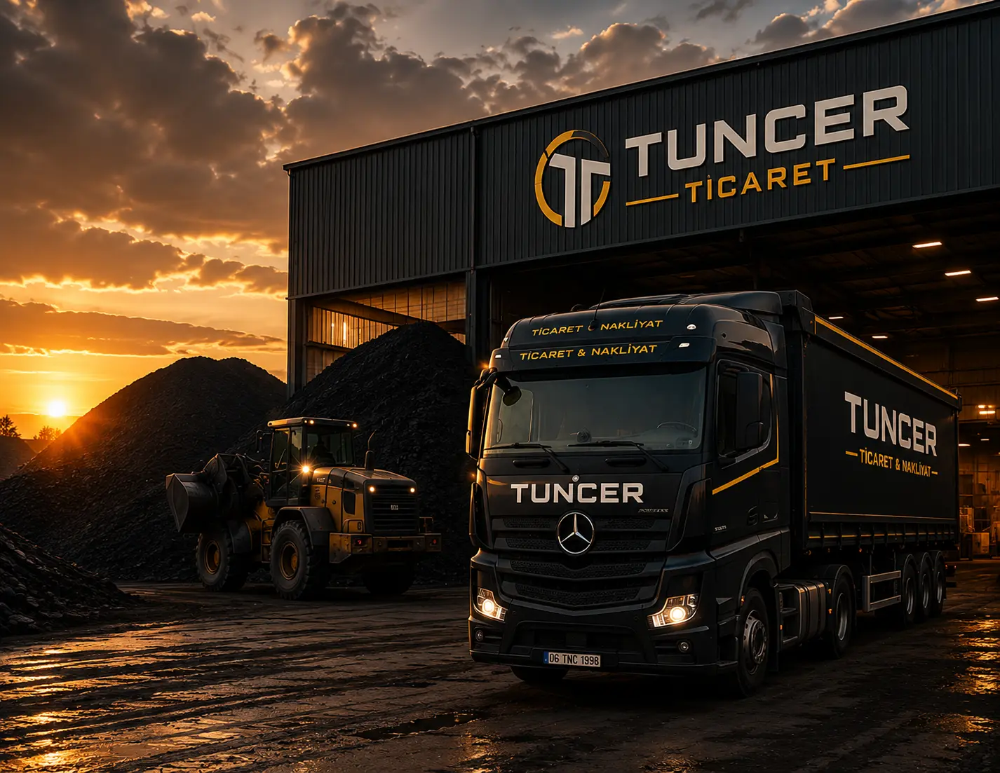

Kurumsal
Hakkımızda
Hikayemiz
Bir Depodan Anadolu Geneline Uzanan Yolculuk
Tuncer Ticaret, 1998 yılında Ankara Organize Sanayi Bölgesi'nde küçük bir kömür deposu olarak kuruldu. Kurucumuzun saha tecrübesi ve dürüst ticaret anlayışı, kısa sürede bölge esnafının ve sanayi tesislerinin güvenini kazandı.
İlerleyen yıllarda tuğla ve yapı malzemesi tedarikini bünyemize kattık; ardından kendi nakliyat filomuzu kurarak tedarik zincirinin tamamını kontrol altına aldık. Bugün, aynı ilk günkü titizlikle, artık kurumsal bir yapı ve geniş bir araç filosuyla hizmet veriyoruz.
Yolumuza çıkaran şey hiç değişmedi: sözünde duran bir tedarikçi olmak.

Kilometre Taşları
Büyüme Sürecimiz
Kuruluş
Ankara Organize Sanayi Bölgesi'nde tek depo ve tek araçla kömür tedariki faaliyetlerine başladık.
Tuğla & Yapı Malzemesi Bölümü
Artan inşaat talebine karşılık tuğla ve yapı malzemesi tedarik hattını devreye aldık.
Kendi Nakliyat Filomuz
İlk 10 araçlık filomuzu kurarak lojistik süreçlerini tamamen kendi bünyemizde yönetmeye başladık.
Bölgesel Genişleme
Depo kapasitemizi üç katına çıkararak İç Anadolu'nun tamamına düzenli sevkiyat ağı kurduk.
Kurumsal Dönüşüm
40+ araçlık filo, dijitalleşen operasyon süreçleri ve genişleyen kurumsal müşteri portföyümüzle sektörde güvenilir bir marka olarak yolumuza devam ediyoruz.
Vizyonumuz
Kömür, tuğla ve nakliyat sektörlerinde; kalite, şeffaflık ve zamanında teslimat standartlarıyla Türkiye'nin referans gösterilen kurumsal tedarik markası olmak.
Misyonumuz
Müşterilerimizin üretim ve inşaat süreçlerini kesintiye uğratmayacak şekilde, denetimli ürün ve planlı lojistikle güvenilir tedarik sağlamak.
İlkelerimiz
Bizi Biz Yapan Değerler
Güvenilirlik
Verdiğimiz her söz, sahada karşılık bulur.
Kalite Denetimi
Her sevkiyat, sıkı kontrol süreçlerinden geçer.
Şeffaflık
Fiyat ve süreçlerde net, anlaşılır iletişim kurarız.
Sürdürülebilirlik
Kaynakları verimli kullanan bir operasyon anlayışı benimseriz.